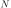
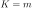
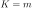

Next: Competitive Learning Networks Up: ch10 Previous: Perceptron Network
The back propagation network (BPN) is a powerful and popular
learning algorithm that finds many applications in practice.
Similar to the perceptron network, the BPN can also be used
as a supervised classifier based on a training set
, where  is a
d-dimensional sample vector in the training set, and its lable
is a
d-dimensional sample vector in the training set, and its lable
 is an m-dimensional vector, indicating to which of the
is an m-dimensional vector, indicating to which of the
 classs
classs
 pattern belongs.
pattern belongs.
The BPN is a three-layer hierarchical structure composed of the
input, hidden, and output layers containing respectively  ,
,  ,
and
,
and  nodes. Each node in the hidden and output layers is fully
connected to all nodes in the previous layer. Due to the two-level
learning taking place at both the hidden and output layers, the BPN
is much more powerful than the two-layer perceptron network as it
can handle nonlinear as well as linear classification problems.
nodes. Each node in the hidden and output layers is fully
connected to all nodes in the previous layer. Due to the two-level
learning taking place at both the hidden and output layers, the BPN
is much more powerful than the two-layer perceptron network as it
can handle nonlinear as well as linear classification problems.
When one of the  training patterns  is presented to
the input layer of the BPN, an m-D vector
is produced
at the output layer as the corresponding response, representing the
class to which has been assigned. Similar to the perceptron
network, the output nodes can represent  classes based on
the one-hot method, or, alternatively, they can encode as many as
is presented to
the input layer of the BPN, an m-D vector
is produced
at the output layer as the corresponding response, representing the
class to which has been assigned. Similar to the perceptron
network, the output nodes can represent  classes based on
the one-hot method, or, alternatively, they can encode as many as
 classes based on binary encoded. The goal of the BPG learning
is to modify the weights of both the hidden and output layers based on
the training set so that its output
matches the desired
output, the label
classes based on binary encoded. The goal of the BPG learning
is to modify the weights of both the hidden and output layers based on
the training set so that its output
matches the desired
output, the label  , the true class identity of the current
input , with minimum
.
, the true class identity of the current
input , with minimum
.

Specifically, the training of the BPN is an iteration of a two-phase process:
A randomly selected sample labeled by is presented
to the input layer and forwarded through the weighted connections to
the hidden layer and then the output layer to produce output
.
The error
 measuring the difference between the desired
output and the actual output
is propagated
backward from the output layer through the hidden layer to the input
layer, during which the weights of both the output and hidden layers
are modified so that the error
will be reduced when the
same or similar pattern is presented in the future.
measuring the difference between the desired
output and the actual output
is propagated
backward from the output layer through the hidden layer to the input
layer, during which the weights of both the output and hidden layers
are modified so that the error
will be reduced when the
same or similar pattern is presented in the future.
We now consider the specific computation taking place in both the forward and backward passes.
| (44) |
![${\bf z}=[z_0=1,z_1,\cdots,z_l]^T$](img244.svg) ,
, and
is the activation of the jth hidden
layer node. In vector form we have
,
, and
is the activation of the jth hidden
layer node. In vector form we have
| (46) |
![$\hat{\bf y}=[\hat{y}_1,\cdots,y_m]^T$](img249.svg) .
.
Define the total error as an energy function of the output weights
and hidden layer weights
:
 |
 |
||
|
(47) |
To reduce the error function
treated as a function of
the weights of both output and hidden layers, the gradient descent
method is used to iteratively modifying first the output layer weights
and then the hidden layer weights, as shown in the following steps:
with respect to the output
layer weights
by
chain rule:
| (48) |
 to reduce
by gradient descent method:
to reduce
by gradient descent method:
| (49) |
 is the learning rate or step size, or in matrix form:
is the learning rate or step size, or in matrix form:
| (50) |
 .
.
with respect to the hidden
layer weights
 by
chain rule:
by
chain rule:
|
|||
|
| (51) |
| (52) |
 's removed, and
is the elementwise (Hadamard)
product of vectors
and
denoted by
.
's removed, and
is the elementwise (Hadamard)
product of vectors
and
denoted by
.
by gradient descent method:
| (53) |
| (54) |
 and
.
and
.
Here are the steps in each iteration:
 dimensional vector
;
dimensional vector
;
The Matlab code for the essential part of the BPN algorithm is listed
below. Array  contains
contains  classes each with samples, array
classes each with samples, array  are the labelings of the training samples, array
are the labelings of the training samples, array  contains the
contains the
 dimensional weight vectors for the
dimensional weight vectors for the  output nodes.
output nodes.
syms x
g=1/(1+exp(-x)); % Sigmoid activation function
dg=diff(g); % its derivative function
g=matlabFunction(g);
dg=matlabFunction(dg);
[X Y]=getData; % get the training data
[N,K]=size(X) % number of inputs and total number of samples
L=20; % number of hidden nodes
eta=0.1; % learning rate (0,1)
for n=1:N
xmin=min(X(n,:));
xmax=max(X(n,:));
s=1/(xmax-xmin);
for i=1:K
X(n,i)=(X(n,i)-xmin)*s; % Convert to entire dynamic range
end
end
X=[ones(1,K);X]; % augment X by including a row of x0=1
Wh=1-2*rand(L,N+1); % Initialize hidden layer weights and biases
Wo=1-2*rand(M,L+1); % Initialize output layer weights and biases
it=0; % initialize iteration index
ie=0;
er=1;
while er>0.01
n=randi(N,1); % pick a randome number between 1 and N
x=X(:,n); % pick a training sample
y=Y(:,n); % and its class labeling
ah=Wh*x; % activation of hidden layer
z=[1; g(ah)]; % output of hidden layer (augmented) (eq. 44)
ao=Wo*z; % activation to output layer
yhat=g(ao); % output of output layer (eq. 46)
do=(y-yhat).*dg(ao); % Find d of output layer
dh=(Wo(:, 2:L+1)'*do).*dg(ah); % delta of hidden layer (eq. 52)
Wo=Wo+eta*do*z'; % update output layer weights (eq. 50)
Wh=Wh+eta*dh*x'; % update hidden layer weights (eq. 54)
it=it+1; % increment of iteration index
if ~mod(it,1000) % check error every 1000 iterations
Yp=g(Wo*[ones(1,K); g(Wh*X)]); % feed forward to get output Y given X
[Cm er]=ConfusionMatrix(yhat,y);
fprintf('epoch %d: %.4f\n', ie,er);
end
end
The function ConfusionMatrix generates the confusion matrix:
function [Cm er]=ConfusionMatrix(yhat,ytrain)
K=length(unique(ytrain)); % number of classes
N=length(ytrain); % number of test samples
Cm=zeros(K);
for n=1:N
i=ytrain(n);
j=yhat(n);
Cm(i,j)=Cm(i,j)+1;
end
er=1-sum(diag(Cm))/N;
fprintf('%d/%d\n',N-sum(diag(Cm)),N)
end
The training process of BP network can also be considered as a data modeling problem to fit the given data by a function with the weights of both the hidden and output layers as the parameters:
| (55) |
Example 1: The classification results of two previously used 2-D data sets are shown below. The error rates are respectively and , and the confusion matrices are:
| (56) |


Example 2:
The back propagation network trained by the dataset of ten digits from 0 to 9 used previously is used to classify the same dataset, with the resulting confusion matrix shown below. Out of the 2240 samples, 80 are misclassified, i.e., the error rate is 3.57%. Note that this error rate is lower than that of the naive Bayes classifier previously considered, due to the fact that the classification surfaces of the back propagation network can be more sophisticated than the quadratic surfaces of the Bayes classifier.
| (57) |